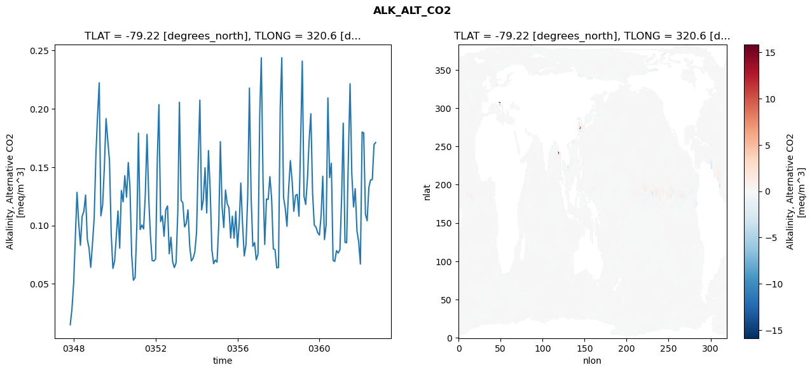
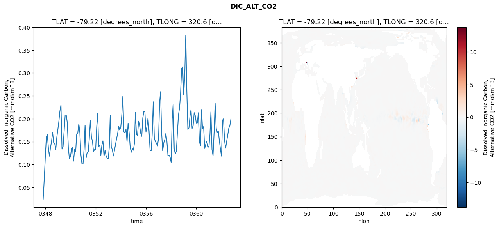
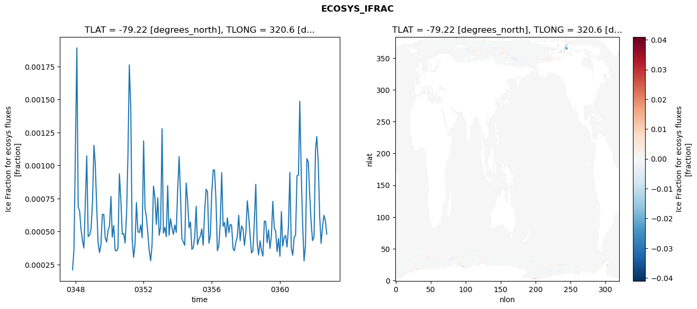
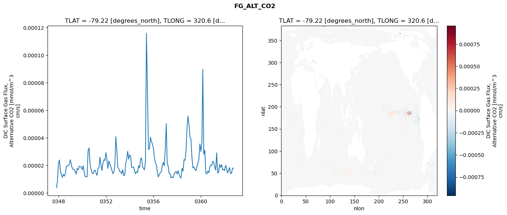

glb-dor_North_Atlantic_basin_043_1999-10-01_00175#
Simulation details#
Case: smyle.cdr-atlas-v0.glb-dor_North_Atlantic_basin_043_1999-10-01_00175.001
Basin: North_Atlantic_basin
Polygon: 43.0
Start date: 1999-10
Show code cell source Hide code cell source
import xarray as xr
import matplotlib.pyplot as plt
Show code cell source Hide code cell source
zarr_store = "/path/to/zarr/store"
# Parameters
zarr_store = "/global/cfs/projectdirs/m4746/Projects/Ocean-CDR-Atlas-v0/data/validation/smyle.cdr-atlas-v0.glb-dor_North_Atlantic_basin_043_1999-10-01_00175.001.validation.zarr"
Show code cell source Hide code cell source
%%time
ds_o = xr.open_zarr(zarr_store).compute()
ds_o
CPU times: user 645 ms, sys: 434 ms, total: 1.08 s
Wall time: 1.24 s
<xarray.Dataset> Size: 2MB
Dimensions: (nlat: 384, nlon: 320, time: 180)
Coordinates:
TLAT float64 8B -79.22
TLONG float64 8B 320.6
ULAT float64 8B -78.95
ULONG float64 8B 321.1
* time (time) object 1kB 0347-11-01 00:00:00 ... 0362-10-01 0...
z_t float32 4B 500.0
Dimensions without coordinates: nlat, nlon
Data variables:
ALK_ALT_CO2_diff (nlat, nlon) float32 492kB nan nan nan ... nan nan nan
ALK_ALT_CO2_rmse (time) float64 1kB 0.015 0.02857 ... 0.1695 0.1711
DIC_ALT_CO2_diff (nlat, nlon) float32 492kB nan nan nan ... nan nan nan
DIC_ALT_CO2_rmse (time) float64 1kB 0.02482 0.06721 ... 0.1851 0.1994
ECOSYS_IFRAC_diff (nlat, nlon) float32 492kB nan nan nan ... nan nan nan
ECOSYS_IFRAC_rmse (time) float64 1kB 0.0002105 0.000364 ... 0.00048
FG_ALT_CO2_diff (nlat, nlon) float32 492kB nan nan nan ... nan nan nan
FG_ALT_CO2_rmse (time) float64 1kB 3.777e-06 8.86e-06 ... 1.78e-05xarray.Dataset
- nlat: 384
- nlon: 320
- time: 180
- TLAT()float64-79.22
- long_name :
- array of t-grid latitudes
- units :
- degrees_north
array(-79.22052261)
- TLONG()float64320.6
- long_name :
- array of t-grid longitudes
- units :
- degrees_east
array(320.56250892)
- ULAT()float64-78.95
- long_name :
- array of u-grid latitudes
- units :
- degrees_north
array(-78.95289509)
- ULONG()float64321.1
- long_name :
- array of u-grid longitudes
- units :
- degrees_east
array(321.12500894)
- time(time)object0347-11-01 00:00:00 ... 0362-10-...
- bounds :
- time_bound
- long_name :
- time
array([cftime.DatetimeNoLeap(347, 11, 1, 0, 0, 0, 0, has_year_zero=True), cftime.DatetimeNoLeap(347, 12, 1, 0, 0, 0, 0, has_year_zero=True), cftime.DatetimeNoLeap(348, 1, 1, 0, 0, 0, 0, has_year_zero=True), cftime.DatetimeNoLeap(348, 2, 1, 0, 0, 0, 0, has_year_zero=True), cftime.DatetimeNoLeap(348, 3, 1, 0, 0, 0, 0, has_year_zero=True), cftime.DatetimeNoLeap(348, 4, 1, 0, 0, 0, 0, has_year_zero=True), cftime.DatetimeNoLeap(348, 5, 1, 0, 0, 0, 0, has_year_zero=True), cftime.DatetimeNoLeap(348, 6, 1, 0, 0, 0, 0, has_year_zero=True), cftime.DatetimeNoLeap(348, 7, 1, 0, 0, 0, 0, has_year_zero=True), cftime.DatetimeNoLeap(348, 8, 1, 0, 0, 0, 0, has_year_zero=True), cftime.DatetimeNoLeap(348, 9, 1, 0, 0, 0, 0, has_year_zero=True), cftime.DatetimeNoLeap(348, 10, 1, 0, 0, 0, 0, has_year_zero=True), cftime.DatetimeNoLeap(348, 11, 1, 0, 0, 0, 0, has_year_zero=True), cftime.DatetimeNoLeap(348, 12, 1, 0, 0, 0, 0, has_year_zero=True), cftime.DatetimeNoLeap(349, 1, 1, 0, 0, 0, 0, has_year_zero=True), cftime.DatetimeNoLeap(349, 2, 1, 0, 0, 0, 0, has_year_zero=True), cftime.DatetimeNoLeap(349, 3, 1, 0, 0, 0, 0, has_year_zero=True), cftime.DatetimeNoLeap(349, 4, 1, 0, 0, 0, 0, has_year_zero=True), cftime.DatetimeNoLeap(349, 5, 1, 0, 0, 0, 0, has_year_zero=True), cftime.DatetimeNoLeap(349, 6, 1, 0, 0, 0, 0, has_year_zero=True), cftime.DatetimeNoLeap(349, 7, 1, 0, 0, 0, 0, has_year_zero=True), cftime.DatetimeNoLeap(349, 8, 1, 0, 0, 0, 0, has_year_zero=True), cftime.DatetimeNoLeap(349, 9, 1, 0, 0, 0, 0, has_year_zero=True), cftime.DatetimeNoLeap(349, 10, 1, 0, 0, 0, 0, has_year_zero=True), cftime.DatetimeNoLeap(349, 11, 1, 0, 0, 0, 0, has_year_zero=True), cftime.DatetimeNoLeap(349, 12, 1, 0, 0, 0, 0, has_year_zero=True), cftime.DatetimeNoLeap(350, 1, 1, 0, 0, 0, 0, has_year_zero=True), cftime.DatetimeNoLeap(350, 2, 1, 0, 0, 0, 0, has_year_zero=True), cftime.DatetimeNoLeap(350, 3, 1, 0, 0, 0, 0, has_year_zero=True), cftime.DatetimeNoLeap(350, 4, 1, 0, 0, 0, 0, has_year_zero=True), cftime.DatetimeNoLeap(350, 5, 1, 0, 0, 0, 0, has_year_zero=True), cftime.DatetimeNoLeap(350, 6, 1, 0, 0, 0, 0, has_year_zero=True), cftime.DatetimeNoLeap(350, 7, 1, 0, 0, 0, 0, has_year_zero=True), cftime.DatetimeNoLeap(350, 8, 1, 0, 0, 0, 0, has_year_zero=True), cftime.DatetimeNoLeap(350, 9, 1, 0, 0, 0, 0, has_year_zero=True), cftime.DatetimeNoLeap(350, 10, 1, 0, 0, 0, 0, has_year_zero=True), cftime.DatetimeNoLeap(350, 11, 1, 0, 0, 0, 0, has_year_zero=True), cftime.DatetimeNoLeap(350, 12, 1, 0, 0, 0, 0, has_year_zero=True), cftime.DatetimeNoLeap(351, 1, 1, 0, 0, 0, 0, has_year_zero=True), cftime.DatetimeNoLeap(351, 2, 1, 0, 0, 0, 0, has_year_zero=True), cftime.DatetimeNoLeap(351, 3, 1, 0, 0, 0, 0, has_year_zero=True), cftime.DatetimeNoLeap(351, 4, 1, 0, 0, 0, 0, has_year_zero=True), cftime.DatetimeNoLeap(351, 5, 1, 0, 0, 0, 0, has_year_zero=True), cftime.DatetimeNoLeap(351, 6, 1, 0, 0, 0, 0, has_year_zero=True), cftime.DatetimeNoLeap(351, 7, 1, 0, 0, 0, 0, has_year_zero=True), cftime.DatetimeNoLeap(351, 8, 1, 0, 0, 0, 0, has_year_zero=True), cftime.DatetimeNoLeap(351, 9, 1, 0, 0, 0, 0, has_year_zero=True), cftime.DatetimeNoLeap(351, 10, 1, 0, 0, 0, 0, has_year_zero=True), cftime.DatetimeNoLeap(351, 11, 1, 0, 0, 0, 0, has_year_zero=True), cftime.DatetimeNoLeap(351, 12, 1, 0, 0, 0, 0, has_year_zero=True), cftime.DatetimeNoLeap(352, 1, 1, 0, 0, 0, 0, has_year_zero=True), cftime.DatetimeNoLeap(352, 2, 1, 0, 0, 0, 0, has_year_zero=True), cftime.DatetimeNoLeap(352, 3, 1, 0, 0, 0, 0, has_year_zero=True), cftime.DatetimeNoLeap(352, 4, 1, 0, 0, 0, 0, has_year_zero=True), cftime.DatetimeNoLeap(352, 5, 1, 0, 0, 0, 0, has_year_zero=True), cftime.DatetimeNoLeap(352, 6, 1, 0, 0, 0, 0, has_year_zero=True), cftime.DatetimeNoLeap(352, 7, 1, 0, 0, 0, 0, has_year_zero=True), cftime.DatetimeNoLeap(352, 8, 1, 0, 0, 0, 0, has_year_zero=True), cftime.DatetimeNoLeap(352, 9, 1, 0, 0, 0, 0, has_year_zero=True), cftime.DatetimeNoLeap(352, 10, 1, 0, 0, 0, 0, has_year_zero=True), cftime.DatetimeNoLeap(352, 11, 1, 0, 0, 0, 0, has_year_zero=True), cftime.DatetimeNoLeap(352, 12, 1, 0, 0, 0, 0, has_year_zero=True), cftime.DatetimeNoLeap(353, 1, 1, 0, 0, 0, 0, has_year_zero=True), cftime.DatetimeNoLeap(353, 2, 1, 0, 0, 0, 0, has_year_zero=True), cftime.DatetimeNoLeap(353, 3, 1, 0, 0, 0, 0, has_year_zero=True), cftime.DatetimeNoLeap(353, 4, 1, 0, 0, 0, 0, has_year_zero=True), cftime.DatetimeNoLeap(353, 5, 1, 0, 0, 0, 0, has_year_zero=True), cftime.DatetimeNoLeap(353, 6, 1, 0, 0, 0, 0, has_year_zero=True), cftime.DatetimeNoLeap(353, 7, 1, 0, 0, 0, 0, has_year_zero=True), cftime.DatetimeNoLeap(353, 8, 1, 0, 0, 0, 0, has_year_zero=True), cftime.DatetimeNoLeap(353, 9, 1, 0, 0, 0, 0, has_year_zero=True), cftime.DatetimeNoLeap(353, 10, 1, 0, 0, 0, 0, has_year_zero=True), cftime.DatetimeNoLeap(353, 11, 1, 0, 0, 0, 0, has_year_zero=True), cftime.DatetimeNoLeap(353, 12, 1, 0, 0, 0, 0, has_year_zero=True), cftime.DatetimeNoLeap(354, 1, 1, 0, 0, 0, 0, has_year_zero=True), cftime.DatetimeNoLeap(354, 2, 1, 0, 0, 0, 0, has_year_zero=True), cftime.DatetimeNoLeap(354, 3, 1, 0, 0, 0, 0, has_year_zero=True), cftime.DatetimeNoLeap(354, 4, 1, 0, 0, 0, 0, has_year_zero=True), cftime.DatetimeNoLeap(354, 5, 1, 0, 0, 0, 0, has_year_zero=True), cftime.DatetimeNoLeap(354, 6, 1, 0, 0, 0, 0, has_year_zero=True), cftime.DatetimeNoLeap(354, 7, 1, 0, 0, 0, 0, has_year_zero=True), cftime.DatetimeNoLeap(354, 8, 1, 0, 0, 0, 0, has_year_zero=True), cftime.DatetimeNoLeap(354, 9, 1, 0, 0, 0, 0, has_year_zero=True), cftime.DatetimeNoLeap(354, 10, 1, 0, 0, 0, 0, has_year_zero=True), cftime.DatetimeNoLeap(354, 11, 1, 0, 0, 0, 0, has_year_zero=True), cftime.DatetimeNoLeap(354, 12, 1, 0, 0, 0, 0, has_year_zero=True), cftime.DatetimeNoLeap(355, 1, 1, 0, 0, 0, 0, has_year_zero=True), cftime.DatetimeNoLeap(355, 2, 1, 0, 0, 0, 0, has_year_zero=True), cftime.DatetimeNoLeap(355, 3, 1, 0, 0, 0, 0, has_year_zero=True), cftime.DatetimeNoLeap(355, 4, 1, 0, 0, 0, 0, has_year_zero=True), cftime.DatetimeNoLeap(355, 5, 1, 0, 0, 0, 0, has_year_zero=True), cftime.DatetimeNoLeap(355, 6, 1, 0, 0, 0, 0, has_year_zero=True), cftime.DatetimeNoLeap(355, 7, 1, 0, 0, 0, 0, has_year_zero=True), cftime.DatetimeNoLeap(355, 8, 1, 0, 0, 0, 0, has_year_zero=True), cftime.DatetimeNoLeap(355, 9, 1, 0, 0, 0, 0, has_year_zero=True), cftime.DatetimeNoLeap(355, 10, 1, 0, 0, 0, 0, has_year_zero=True), cftime.DatetimeNoLeap(355, 11, 1, 0, 0, 0, 0, has_year_zero=True), cftime.DatetimeNoLeap(355, 12, 1, 0, 0, 0, 0, has_year_zero=True), cftime.DatetimeNoLeap(356, 1, 1, 0, 0, 0, 0, has_year_zero=True), cftime.DatetimeNoLeap(356, 2, 1, 0, 0, 0, 0, has_year_zero=True), cftime.DatetimeNoLeap(356, 3, 1, 0, 0, 0, 0, has_year_zero=True), cftime.DatetimeNoLeap(356, 4, 1, 0, 0, 0, 0, has_year_zero=True), cftime.DatetimeNoLeap(356, 5, 1, 0, 0, 0, 0, has_year_zero=True), cftime.DatetimeNoLeap(356, 6, 1, 0, 0, 0, 0, has_year_zero=True), cftime.DatetimeNoLeap(356, 7, 1, 0, 0, 0, 0, has_year_zero=True), cftime.DatetimeNoLeap(356, 8, 1, 0, 0, 0, 0, has_year_zero=True), cftime.DatetimeNoLeap(356, 9, 1, 0, 0, 0, 0, has_year_zero=True), cftime.DatetimeNoLeap(356, 10, 1, 0, 0, 0, 0, has_year_zero=True), cftime.DatetimeNoLeap(356, 11, 1, 0, 0, 0, 0, has_year_zero=True), cftime.DatetimeNoLeap(356, 12, 1, 0, 0, 0, 0, has_year_zero=True), cftime.DatetimeNoLeap(357, 1, 1, 0, 0, 0, 0, has_year_zero=True), cftime.DatetimeNoLeap(357, 2, 1, 0, 0, 0, 0, has_year_zero=True), cftime.DatetimeNoLeap(357, 3, 1, 0, 0, 0, 0, has_year_zero=True), cftime.DatetimeNoLeap(357, 4, 1, 0, 0, 0, 0, has_year_zero=True), cftime.DatetimeNoLeap(357, 5, 1, 0, 0, 0, 0, has_year_zero=True), cftime.DatetimeNoLeap(357, 6, 1, 0, 0, 0, 0, has_year_zero=True), cftime.DatetimeNoLeap(357, 7, 1, 0, 0, 0, 0, has_year_zero=True), cftime.DatetimeNoLeap(357, 8, 1, 0, 0, 0, 0, has_year_zero=True), cftime.DatetimeNoLeap(357, 9, 1, 0, 0, 0, 0, has_year_zero=True), cftime.DatetimeNoLeap(357, 10, 1, 0, 0, 0, 0, has_year_zero=True), cftime.DatetimeNoLeap(357, 11, 1, 0, 0, 0, 0, has_year_zero=True), cftime.DatetimeNoLeap(357, 12, 1, 0, 0, 0, 0, has_year_zero=True), cftime.DatetimeNoLeap(358, 1, 1, 0, 0, 0, 0, has_year_zero=True), cftime.DatetimeNoLeap(358, 2, 1, 0, 0, 0, 0, has_year_zero=True), cftime.DatetimeNoLeap(358, 3, 1, 0, 0, 0, 0, has_year_zero=True), cftime.DatetimeNoLeap(358, 4, 1, 0, 0, 0, 0, has_year_zero=True), cftime.DatetimeNoLeap(358, 5, 1, 0, 0, 0, 0, has_year_zero=True), cftime.DatetimeNoLeap(358, 6, 1, 0, 0, 0, 0, has_year_zero=True), cftime.DatetimeNoLeap(358, 7, 1, 0, 0, 0, 0, has_year_zero=True), cftime.DatetimeNoLeap(358, 8, 1, 0, 0, 0, 0, has_year_zero=True), cftime.DatetimeNoLeap(358, 9, 1, 0, 0, 0, 0, has_year_zero=True), cftime.DatetimeNoLeap(358, 10, 1, 0, 0, 0, 0, has_year_zero=True), cftime.DatetimeNoLeap(358, 11, 1, 0, 0, 0, 0, has_year_zero=True), cftime.DatetimeNoLeap(358, 12, 1, 0, 0, 0, 0, has_year_zero=True), cftime.DatetimeNoLeap(359, 1, 1, 0, 0, 0, 0, has_year_zero=True), cftime.DatetimeNoLeap(359, 2, 1, 0, 0, 0, 0, has_year_zero=True), cftime.DatetimeNoLeap(359, 3, 1, 0, 0, 0, 0, has_year_zero=True), cftime.DatetimeNoLeap(359, 4, 1, 0, 0, 0, 0, has_year_zero=True), cftime.DatetimeNoLeap(359, 5, 1, 0, 0, 0, 0, has_year_zero=True), cftime.DatetimeNoLeap(359, 6, 1, 0, 0, 0, 0, has_year_zero=True), cftime.DatetimeNoLeap(359, 7, 1, 0, 0, 0, 0, has_year_zero=True), cftime.DatetimeNoLeap(359, 8, 1, 0, 0, 0, 0, has_year_zero=True), cftime.DatetimeNoLeap(359, 9, 1, 0, 0, 0, 0, has_year_zero=True), cftime.DatetimeNoLeap(359, 10, 1, 0, 0, 0, 0, has_year_zero=True), cftime.DatetimeNoLeap(359, 11, 1, 0, 0, 0, 0, has_year_zero=True), cftime.DatetimeNoLeap(359, 12, 1, 0, 0, 0, 0, has_year_zero=True), cftime.DatetimeNoLeap(360, 1, 1, 0, 0, 0, 0, has_year_zero=True), cftime.DatetimeNoLeap(360, 2, 1, 0, 0, 0, 0, has_year_zero=True), cftime.DatetimeNoLeap(360, 3, 1, 0, 0, 0, 0, has_year_zero=True), cftime.DatetimeNoLeap(360, 4, 1, 0, 0, 0, 0, has_year_zero=True), cftime.DatetimeNoLeap(360, 5, 1, 0, 0, 0, 0, has_year_zero=True), cftime.DatetimeNoLeap(360, 6, 1, 0, 0, 0, 0, has_year_zero=True), cftime.DatetimeNoLeap(360, 7, 1, 0, 0, 0, 0, has_year_zero=True), cftime.DatetimeNoLeap(360, 8, 1, 0, 0, 0, 0, has_year_zero=True), cftime.DatetimeNoLeap(360, 9, 1, 0, 0, 0, 0, has_year_zero=True), cftime.DatetimeNoLeap(360, 10, 1, 0, 0, 0, 0, has_year_zero=True), cftime.DatetimeNoLeap(360, 11, 1, 0, 0, 0, 0, has_year_zero=True), cftime.DatetimeNoLeap(360, 12, 1, 0, 0, 0, 0, has_year_zero=True), cftime.DatetimeNoLeap(361, 1, 1, 0, 0, 0, 0, has_year_zero=True), cftime.DatetimeNoLeap(361, 2, 1, 0, 0, 0, 0, has_year_zero=True), cftime.DatetimeNoLeap(361, 3, 1, 0, 0, 0, 0, has_year_zero=True), cftime.DatetimeNoLeap(361, 4, 1, 0, 0, 0, 0, has_year_zero=True), cftime.DatetimeNoLeap(361, 5, 1, 0, 0, 0, 0, has_year_zero=True), cftime.DatetimeNoLeap(361, 6, 1, 0, 0, 0, 0, has_year_zero=True), cftime.DatetimeNoLeap(361, 7, 1, 0, 0, 0, 0, has_year_zero=True), cftime.DatetimeNoLeap(361, 8, 1, 0, 0, 0, 0, has_year_zero=True), cftime.DatetimeNoLeap(361, 9, 1, 0, 0, 0, 0, has_year_zero=True), cftime.DatetimeNoLeap(361, 10, 1, 0, 0, 0, 0, has_year_zero=True), cftime.DatetimeNoLeap(361, 11, 1, 0, 0, 0, 0, has_year_zero=True), cftime.DatetimeNoLeap(361, 12, 1, 0, 0, 0, 0, has_year_zero=True), cftime.DatetimeNoLeap(362, 1, 1, 0, 0, 0, 0, has_year_zero=True), cftime.DatetimeNoLeap(362, 2, 1, 0, 0, 0, 0, has_year_zero=True), cftime.DatetimeNoLeap(362, 3, 1, 0, 0, 0, 0, has_year_zero=True), cftime.DatetimeNoLeap(362, 4, 1, 0, 0, 0, 0, has_year_zero=True), cftime.DatetimeNoLeap(362, 5, 1, 0, 0, 0, 0, has_year_zero=True), cftime.DatetimeNoLeap(362, 6, 1, 0, 0, 0, 0, has_year_zero=True), cftime.DatetimeNoLeap(362, 7, 1, 0, 0, 0, 0, has_year_zero=True), cftime.DatetimeNoLeap(362, 8, 1, 0, 0, 0, 0, has_year_zero=True), cftime.DatetimeNoLeap(362, 9, 1, 0, 0, 0, 0, has_year_zero=True), cftime.DatetimeNoLeap(362, 10, 1, 0, 0, 0, 0, has_year_zero=True)], dtype=object) - z_t()float32500.0
- long_name :
- depth from surface to midpoint of layer
- positive :
- down
- units :
- centimeters
- valid_max :
- 537500.0
- valid_min :
- 500.0
array(500., dtype=float32)
- ALK_ALT_CO2_diff(nlat, nlon)float32nan nan nan nan ... nan nan nan nan
- cell_methods :
- time: mean
- grid_loc :
- 3111
- long_name :
- Alkalinity, Alternative CO2
- units :
- meq/m^3
array([[ nan, nan, nan, ..., nan, nan, nan], [ nan, nan, nan, ..., nan, nan, nan], [0.01489258, 0.00341797, 0.00219727, ..., nan, nan, nan], ..., [ nan, nan, nan, ..., nan, nan, nan], [ nan, nan, nan, ..., nan, nan, nan], [ nan, nan, nan, ..., nan, nan, nan]], dtype=float32) - ALK_ALT_CO2_rmse(time)float640.015 0.02857 ... 0.1695 0.1711
- cell_methods :
- time: mean
- grid_loc :
- 3111
- long_name :
- Alkalinity, Alternative CO2
- units :
- meq/m^3
array([0.01499795, 0.02857282, 0.0512118 , 0.09128316, 0.12845959, 0.10181861, 0.08312007, 0.10810131, 0.11204011, 0.12613416, 0.0881858 , 0.08074113, 0.06422849, 0.08366327, 0.10640137, 0.16045428, 0.19279522, 0.22233375, 0.10832548, 0.11764045, 0.14931593, 0.19160647, 0.17262032, 0.15544888, 0.09249057, 0.06332746, 0.06972771, 0.09221774, 0.11251319, 0.08061383, 0.13004317, 0.12035574, 0.14273807, 0.1243679 , 0.15396841, 0.13266622, 0.07459566, 0.053105 , 0.05552985, 0.10054028, 0.17920264, 0.09655893, 0.10045243, 0.09716215, 0.12581891, 0.17817757, 0.1228977 , 0.0913112 , 0.07004928, 0.06960344, 0.07136556, 0.15794478, 0.20357863, 0.10338567, 0.10840408, 0.09087947, 0.1134361 , 0.11679742, 0.07583964, 0.09003699, 0.06900705, 0.06398452, 0.06809065, 0.11240426, 0.2056474 , 0.12156518, 0.11966857, 0.09884898, 0.10178002, 0.11345057, 0.08225997, 0.06966928, 0.07207955, 0.07729137, 0.09429392, 0.15838723, 0.20745615, 0.11340734, 0.12187584, 0.14948499, 0.11080537, 0.164191 , 0.13043584, 0.07926354, 0.06734549, 0.07045423, 0.06864515, 0.10099677, 0.17192142, 0.11594786, 0.09831545, 0.13042605, 0.11887494, 0.11533156, 0.08931399, 0.10811607, 0.08924171, 0.11215784, 0.08137234, 0.10296844, 0.13636093, 0.10097822, 0.07397078, 0.0835882 , 0.12394952, 0.21782215, 0.12347703, 0.08221855, 0.08540735, 0.0706497 , 0.07540815, 0.19507256, 0.24370538, 0.13790494, 0.08382261, 0.12276962, 0.12235289, 0.14196646, 0.12305372, 0.07997002, 0.07933535, 0.06372101, 0.0641113 , 0.20068002, 0.24383006, 0.12414996, 0.11507421, 0.09937221, 0.13130588, 0.1556656 , 0.13842668, 0.11227353, 0.12571744, 0.12672678, 0.10801244, 0.17503357, 0.24093284, 0.12517431, 0.11807304, 0.13972291, 0.17281721, 0.19576203, 0.1277377 , 0.10044449, 0.09861701, 0.09388885, 0.09183055, 0.10967232, 0.14227755, 0.0879967 , 0.10096051, 0.20938228, 0.14110749, 0.15342347, 0.07030457, 0.06919486, 0.07855696, 0.07642446, 0.07934422, 0.1246373 , 0.18769545, 0.08563747, 0.08523468, 0.15894006, 0.22144481, 0.14400647, 0.11590788, 0.13157944, 0.09535127, 0.0861311 , 0.06701244, 0.18016152, 0.17933717, 0.10976887, 0.10411407, 0.13268949, 0.13907105, 0.13931696, 0.16945143, 0.17112526]) - DIC_ALT_CO2_diff(nlat, nlon)float32nan nan nan nan ... nan nan nan nan
- cell_methods :
- time: mean
- grid_loc :
- 3111
- long_name :
- Dissolved Inorganic Carbon, Alternative CO2
- units :
- mmol/m^3
array([[ nan, nan, nan, ..., nan, nan, nan], [ nan, nan, nan, ..., nan, nan, nan], [0.01708984, 0.01171875, 0.00488281, ..., nan, nan, nan], ..., [ nan, nan, nan, ..., nan, nan, nan], [ nan, nan, nan, ..., nan, nan, nan], [ nan, nan, nan, ..., nan, nan, nan]], dtype=float32) - DIC_ALT_CO2_rmse(time)float640.02482 0.06721 ... 0.1851 0.1994
- cell_methods :
- time: mean
- grid_loc :
- 3111
- long_name :
- Dissolved Inorganic Carbon, Alternative CO2
- units :
- mmol/m^3
array([0.02482018, 0.06720755, 0.11547155, 0.16023051, 0.165684 , 0.13699965, 0.11852758, 0.13702203, 0.15029774, 0.17088139, 0.14822151, 0.14645591, 0.13289603, 0.15924904, 0.17660334, 0.19551574, 0.21652914, 0.23042084, 0.13390659, 0.13962771, 0.17230588, 0.20829402, 0.20854733, 0.19192117, 0.13670446, 0.11331846, 0.11721483, 0.13546803, 0.13849732, 0.10771566, 0.13282272, 0.12791756, 0.16697372, 0.16899458, 0.18922991, 0.16996769, 0.1213432 , 0.10164169, 0.10175464, 0.13382654, 0.18592864, 0.11503542, 0.12625508, 0.12810186, 0.15661766, 0.19577975, 0.16045671, 0.15111886, 0.12874096, 0.13272381, 0.13250608, 0.18102936, 0.21212629, 0.13967817, 0.14293411, 0.12029974, 0.14224797, 0.15196158, 0.11858223, 0.1310403 , 0.11908338, 0.11395928, 0.1134028 , 0.13701616, 0.20740516, 0.13818932, 0.13255324, 0.11889966, 0.13082868, 0.14409755, 0.15650134, 0.16758343, 0.18351555, 0.17587017, 0.18211057, 0.21005013, 0.24900168, 0.17199112, 0.16909914, 0.17723671, 0.14998958, 0.19027279, 0.16932643, 0.13778052, 0.12703771, 0.13509262, 0.13150052, 0.14645971, 0.21377849, 0.1656531 , 0.16377667, 0.19494533, 0.18513269, 0.16873308, 0.16182331, 0.20184851, 0.21620727, 0.21486985, 0.17148312, 0.18448549, 0.201475 , 0.17250087, 0.13142973, 0.13028321, 0.16611186, 0.23711742, 0.15753134, 0.15041033, 0.14661432, 0.14083583, 0.15750389, 0.2356023 , 0.2592791 , 0.16866345, 0.13004164, 0.14752037, 0.15442453, 0.16804739, 0.1500414 , 0.11979764, 0.12072849, 0.11694237, 0.10523533, 0.19937509, 0.23247184, 0.13431016, 0.12351948, 0.12935561, 0.16841032, 0.20829096, 0.22330245, 0.25439148, 0.30983531, 0.31329319, 0.25174533, 0.30016158, 0.38237703, 0.26090124, 0.17667353, 0.18003655, 0.20534605, 0.22018671, 0.17911942, 0.18442017, 0.21348467, 0.20717637, 0.19079734, 0.19122705, 0.21320628, 0.1504877 , 0.14118123, 0.2201877 , 0.17808027, 0.18293313, 0.13544581, 0.14433801, 0.15099254, 0.14081936, 0.13775308, 0.16602148, 0.21531965, 0.13322068, 0.11955723, 0.16947283, 0.23454342, 0.17967399, 0.17019423, 0.17353048, 0.15185497, 0.13480225, 0.11866929, 0.19702765, 0.19988642, 0.15231225, 0.13595024, 0.15121151, 0.16413162, 0.17948392, 0.18508519, 0.19937863]) - ECOSYS_IFRAC_diff(nlat, nlon)float32nan nan nan nan ... nan nan nan nan
- cell_methods :
- time: mean
- grid_loc :
- 2110
- long_name :
- Ice Fraction for ecosys fluxes
- units :
- fraction
array([[ nan, nan, nan, ..., nan, nan, nan], [ nan, nan, nan, ..., nan, nan, nan], [ 3.5762787e-07, -8.9406967e-07, 1.1622906e-05, ..., nan, nan, nan], ..., [ nan, nan, nan, ..., nan, nan, nan], [ nan, nan, nan, ..., nan, nan, nan], [ nan, nan, nan, ..., nan, nan, nan]], dtype=float32) - ECOSYS_IFRAC_rmse(time)float640.0002105 0.000364 ... 0.00048
- cell_methods :
- time: mean
- grid_loc :
- 2110
- long_name :
- Ice Fraction for ecosys fluxes
- units :
- fraction
array([0.00021048, 0.00036403, 0.00111744, 0.00189072, 0.00068704, 0.0006543 , 0.00051922, 0.00043302, 0.00037502, 0.00071554, 0.00107328, 0.00046187, 0.00047402, 0.00051503, 0.00071193, 0.00115323, 0.00101793, 0.00069666, 0.00041603, 0.00034001, 0.00040167, 0.00063007, 0.00062943, 0.00045053, 0.0004207 , 0.00050955, 0.00054181, 0.0007664 , 0.00045727, 0.00054662, 0.00035916, 0.00035282, 0.00037319, 0.00093695, 0.0007389 , 0.00048054, 0.00048513, 0.00041356, 0.0006294 , 0.0010959 , 0.00176221, 0.001439 , 0.00044618, 0.00030457, 0.00040108, 0.00071999, 0.00049908, 0.00049132, 0.00054984, 0.00045312, 0.00118667, 0.00067171, 0.00061745, 0.00049005, 0.00035712, 0.00027866, 0.00039715, 0.00084509, 0.00075687, 0.0005539 , 0.00075546, 0.00047103, 0.00053833, 0.00127853, 0.0004882 , 0.00053189, 0.00046081, 0.00084775, 0.00047166, 0.00059691, 0.00052888, 0.00047832, 0.00054922, 0.0004934 , 0.00081938, 0.00106743, 0.00078795, 0.00044573, 0.0004202 , 0.00039524, 0.00086769, 0.00073458, 0.00052924, 0.00057285, 0.00036508, 0.00037779, 0.00046277, 0.00069022, 0.00040102, 0.0004426 , 0.00046369, 0.00052077, 0.00039616, 0.00065009, 0.00082027, 0.0008019 , 0.00041182, 0.00047248, 0.00079739, 0.00096682, 0.00096643, 0.00073759, 0.00035558, 0.00039411, 0.00055764, 0.00094568, 0.00053956, 0.00056891, 0.00045976, 0.00060447, 0.00049244, 0.00055401, 0.00054841, 0.0003725 , 0.00035376, 0.00042215, 0.00046034, 0.00062323, 0.00043094, 0.00054254, 0.00052106, 0.00039634, 0.00049224, 0.00073231, 0.00062288, 0.00047328, 0.00033775, 0.00035357, 0.00057074, 0.00085768, 0.00040969, 0.00032268, 0.00042971, 0.00035575, 0.00031421, 0.00057834, 0.00057792, 0.00041498, 0.00051231, 0.00037217, 0.00046534, 0.00072868, 0.00052492, 0.00050303, 0.00034826, 0.00044716, 0.00031306, 0.00065092, 0.00038915, 0.00045604, 0.00046999, 0.00038265, 0.00053193, 0.00094709, 0.00037251, 0.00032067, 0.00045534, 0.00047221, 0.00092262, 0.00092775, 0.00148653, 0.00094855, 0.00056117, 0.00027821, 0.00039272, 0.0010521 , 0.00102423, 0.00076985, 0.00055823, 0.00043068, 0.00046316, 0.00112154, 0.00121943, 0.00101977, 0.00061912, 0.00041032, 0.00053543, 0.00062336, 0.00058101, 0.00047999]) - FG_ALT_CO2_diff(nlat, nlon)float32nan nan nan nan ... nan nan nan nan
- cell_methods :
- time: mean
- grid_loc :
- 2110
- long_name :
- DIC Surface Gas Flux, Alternative CO2
- units :
- mmol/m^3 cm/s
array([[ nan, nan, nan, ..., nan, nan, nan], [ nan, nan, nan, ..., nan, nan, nan], [-4.0415671e-09, -1.0045341e-08, -5.4909859e-09, ..., nan, nan, nan], ..., [ nan, nan, nan, ..., nan, nan, nan], [ nan, nan, nan, ..., nan, nan, nan], [ nan, nan, nan, ..., nan, nan, nan]], dtype=float32) - FG_ALT_CO2_rmse(time)float643.777e-06 8.86e-06 ... 1.78e-05
- cell_methods :
- time: mean
- grid_loc :
- 2110
- long_name :
- DIC Surface Gas Flux, Alternative CO2
- units :
- mmol/m^3 cm/s
array([3.77707820e-06, 8.86033690e-06, 2.18401096e-05, 2.38880048e-05, 1.60841943e-05, 1.32004142e-05, 1.13407566e-05, 1.35548369e-05, 1.21850701e-05, 1.38019520e-05, 1.92714995e-05, 1.96379044e-05, 1.97009725e-05, 2.08803707e-05, 2.41303506e-05, 2.03893003e-05, 1.79753482e-05, 1.69526075e-05, 1.70549629e-05, 1.56617076e-05, 1.36717910e-05, 1.77484190e-05, 1.68300422e-05, 1.93886777e-05, 1.91256014e-05, 1.89738146e-05, 1.68529303e-05, 1.96657020e-05, 1.53281724e-05, 1.18556932e-05, 1.16774502e-05, 1.16530447e-05, 3.07267071e-05, 3.26083327e-05, 2.08631405e-05, 1.70925093e-05, 1.43651913e-05, 1.39372127e-05, 1.60395930e-05, 1.65322970e-05, 1.45672789e-05, 1.26976165e-05, 1.77092111e-05, 1.82372120e-05, 2.59333247e-05, 2.05212003e-05, 1.62437351e-05, 2.17041572e-05, 2.41421509e-05, 2.35046945e-05, 2.92266781e-05, 2.41249012e-05, 1.77570517e-05, 2.32149633e-05, 2.10206151e-05, 1.90697749e-05, 1.65327783e-05, 1.39802162e-05, 1.50847245e-05, 1.96404227e-05, 4.08161767e-05, 3.11838030e-05, 1.84384996e-05, 1.75485396e-05, 1.54533448e-05, 1.53894046e-05, 1.37356665e-05, 1.68456725e-05, 1.25672762e-05, 1.28210564e-05, 2.16182634e-05, 2.43950914e-05, 3.02640019e-05, 2.44529709e-05, 2.76391513e-05, 2.64652564e-05, 1.85079350e-05, 1.84649606e-05, 1.88592928e-05, 1.57621557e-05, ... 2.18717564e-05, 2.07004216e-05, 1.51139203e-05, 1.16004872e-05, 1.32822684e-05, 1.46997405e-05, 1.53447566e-05, 2.00937090e-05, 2.21569136e-05, 1.95787267e-05, 3.17472009e-05, 5.03393103e-05, 2.17284944e-05, 1.91847378e-05, 1.40948644e-05, 1.37846149e-05, 1.08021586e-05, 1.15745942e-05, 1.11977150e-05, 1.35261183e-05, 1.48872211e-05, 1.56367991e-05, 1.37376551e-05, 1.60291300e-05, 1.34496460e-05, 1.15837605e-05, 1.08140830e-05, 1.78893913e-05, 1.57888391e-05, 2.41502942e-05, 2.36746558e-05, 3.05447839e-05, 4.80168793e-05, 5.57897980e-05, 4.93174155e-05, 4.03110279e-05, 3.91832661e-05, 2.58811567e-05, 1.81693035e-05, 1.89464521e-05, 1.70218247e-05, 1.61895642e-05, 1.90636917e-05, 2.14488079e-05, 2.44642384e-05, 3.55854164e-05, 3.01277602e-05, 3.69882934e-05, 8.95999047e-05, 2.80077638e-05, 3.10126460e-05, 1.44613220e-05, 1.37528047e-05, 1.59045743e-05, 1.46515523e-05, 1.88919878e-05, 2.01414761e-05, 1.98119302e-05, 2.30507938e-05, 2.20659491e-05, 1.89333807e-05, 1.65562120e-05, 2.90778751e-05, 1.43311449e-05, 1.51004326e-05, 2.05361482e-05, 1.84790628e-05, 2.05421572e-05, 1.67373309e-05, 1.71742699e-05, 1.61977694e-05, 2.00033254e-05, 1.79463808e-05, 1.44140414e-05, 1.62800064e-05, 1.83805260e-05, 1.40338076e-05, 1.42202764e-05, 1.80493696e-05, 1.78048460e-05])
- timePandasIndex
PandasIndex(CFTimeIndex([0347-11-01 00:00:00, 0347-12-01 00:00:00, 0348-01-01 00:00:00, 0348-02-01 00:00:00, 0348-03-01 00:00:00, 0348-04-01 00:00:00, 0348-05-01 00:00:00, 0348-06-01 00:00:00, 0348-07-01 00:00:00, 0348-08-01 00:00:00, ... 0362-01-01 00:00:00, 0362-02-01 00:00:00, 0362-03-01 00:00:00, 0362-04-01 00:00:00, 0362-05-01 00:00:00, 0362-06-01 00:00:00, 0362-07-01 00:00:00, 0362-08-01 00:00:00, 0362-09-01 00:00:00, 0362-10-01 00:00:00], dtype='object', length=180, calendar='noleap', freq='MS'))
Show code cell source Hide code cell source
variables = [v[:-5] for v in ds_o.variables if "_rmse" in v]
Show code cell source Hide code cell source
plt.rcParams.update({'figure.max_open_warning': 0})
for v in variables:
fig, axs = plt.subplots(1, 2, figsize=(15, 6))
ds_o[f"{v}_rmse"].plot(ax=axs[0])
ds_o[f"{v}_diff"].plot(ax=axs[1])
plt.suptitle(v, fontweight="bold")



